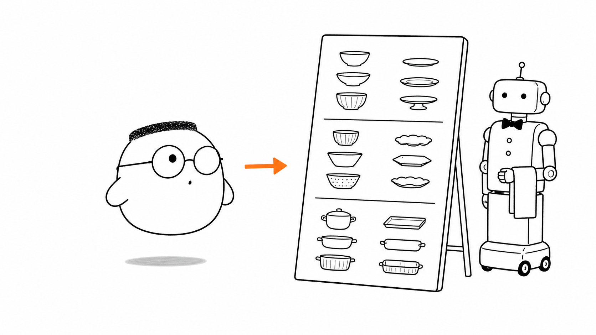
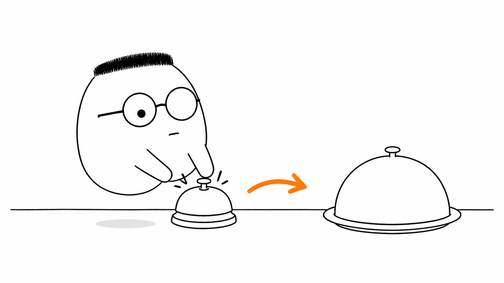
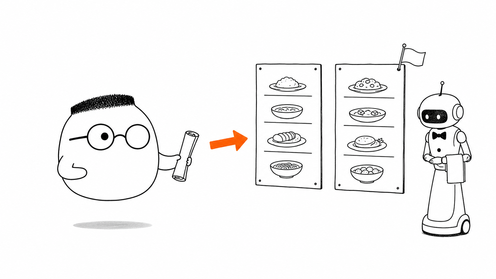

Masalah sehari-hari
Restoran menjadi sulit dilayani ketika setiap tamu menyebut hidangan dengan nama dan cara yang berbeda. Server juga kacau jika satu client memakai REST dengan aturan yang berubah-ubah.
Analogi Kuka
Kuka membaca menu yang sama seperti tamu lain. Semua hidangan punya nama yang mudah ditebak. Ia memilih kopi, lalu memakai kata kerja yang jelas untuk mengirim pesanannya.
Dapur tidak perlu mengenal Kuka secara pribadi. Dapur cukup membaca pesanan, memeriksa isinya, dan mengembalikan piring atau slip alasan dengan bentuk yang sudah disepakati.
Peta sederhananya
Hidangan di menu adalah resource. Baris alamat seperti endpoint. Kata kerja seperti GET atau POST adalah method. Piring atau slip dari dapur adalah respons. Menu yang tetap konsisten adalah kontrak antara client dan server.
Ilustrasi

Menu yang tertulis rapi membuat tamu baru bisa memesan sendiri. API yang konsisten memberi bantuan yang sama kepada client baru.
Penjelasan konsep
REST adalah gaya merancang API dengan resource, nama alamat yang konsisten, dan pesan HTTP yang punya arti jelas. Resource menyimpan keadaan seperti menu kopi atau pesanan Kuka. Yang berpindah antara client dan server adalah representasi keadaan itu.
Karena pola namanya konsisten, client dapat menebak cara membaca atau mengubah resource tanpa bertanya kepada pembuat server untuk setiap endpoint.
Anatomi route
Route sebaiknya menyebut benda, bukan perintah. /menu/kopi menyebut resource kopi di dalam menu. Bentuk seperti /buat-kopi mencampur nama benda dan aksi.
Kata kerja datang dari method. GET membaca, POST membuat atau mengirim, PUT mengganti seluruh resource, PATCH memperbarui sebagian, dan DELETE menghapus. Garis miring menunjukkan hubungan, sedangkan query dapat memberi page, sort, atau filter.
Method dan idempotensi
Idempotensi berarti mengulang operasi menghasilkan efek server yang sama seperti menjalankannya sekali. Jika Kuka mengirim permintaan yang sama lagi karena jaringan sempat terputus, dapur tidak boleh membuat dua piring tanpa alasan.

GET, PUT, dan DELETE biasanya idempotent. POST biasanya membuat resource baru setiap kali. Dengan kunci idempotensi, server dapat mengenali pengulangan POST dan menghindari pekerjaan ganda.
Aksi kustom
Beberapa permintaan tidak pas dengan CRUD, seperti membatalkan pesanan atau menerbitkan ulang tiket. Pakai aksi kustom hanya ketika method biasa tidak cukup. Buat namanya jelas dan jangan mengubah setiap kata kerja bisnis menjadi route khusus.
API daftar
Menu yang panjang tidak perlu dikirim sekaligus. page membagi daftar menjadi halaman. sort memilih urutan. filter menyaring hidangan yang ingin dilihat. Server perlu memberi nilai default yang masuk akal supaya permintaan sederhana tetap mudah dipakai.
Status code
Status code adalah cap singkat yang menjelaskan hasil request. 200 berarti berhasil dibaca atau diproses. 201 berarti resource baru dibuat. 204 berarti berhasil tanpa isi balasan. 400 berarti request perlu diperbaiki. 404 berarti resource yang dicari tidak ada. 500 berarti masalah berada di server.
Cap ini membantu client memilih langkah berikutnya. Client dapat memperbaiki input untuk 400, mencari alamat lain untuk 404, atau mencoba lagi nanti saat server mengirim 500.
Respons error
Jika pesanan gagal, server tidak boleh hanya mengembalikan piring kosong. Respons error perlu menyebut status dan alasan yang dapat dibaca, misalnya kopi tidak tersedia atau jumlah yang diminta tidak masuk akal.
Versioning
Menu edisi baru boleh menambah hidangan atau memperbaiki bentuk jawaban, tetapi perubahan besar dapat memecah tamu lama. Versioning memberi nomor edisi seperti v1 dan v2. Tamu yang masih memakai edisi lama tetap dilayani sampai siap pindah.

Diagram alur
Tamu membaca menu, lalu mengirim method dan nama menu. Dapur memeriksa pesanan. Respons menyebut pesanan jadi atau mengirim slip alasan dengan 400.
Contoh mini
Pesanan 1: POST /kopi, kunci K-7
Server: membuat satu kopi
Pesanan 2: POST /kopi, kunci K-7
Server: mengenali pengulangan
Hasil: tetap satu kopi, 200, idempoten
Kartu pos kedua tiba karena jaringan mengulang pesan. Kunci yang sama membuat server mengembalikan hasil pertama, bukan membuat piring baru.
Ringkasan
- REST membuat kontrak yang konsisten antara client dan server.
- Route menyebut resource dengan nama benda, sedangkan method menyebut tindakannya.
- GET, PUT, dan DELETE biasanya idempotent. POST perlu perlindungan jika aman diulang itu penting.
- API daftar memakai page, sort, dan filter agar menu panjang tetap mudah dibaca.
- Status code memberi cap standar tentang hasil request.
- Respons error perlu menyebut alasan yang dapat dibaca, bukan hanya mengirim piring kosong.
- Versioning menjaga client lama tetap dapat memakai edisi API yang mereka kenal.
Pertanyaan pemahaman
- Apa itu REST dalam satu kalimat?
- Kenapa pesanan yang sama dikirim dua kali tidak boleh menghasilkan dua piring?
- Apa gunanya status code bagi pengirim request?
Mau lebih dalam
Versi teknis membahas standar REST, pilihan route, method, status code, dan bentuk respons error dengan contoh yang lebih lengkap.
Disinggung sekilas
- Enam batasan REST
- Kenapa REST membingungkan sekarang
- Aturan emas untuk API
- Batasan vs konvensi
- Delapan prinsip
Belum dibahas di sini
Contoh platform PM dan kode Go penuh ada di ../html_notes/notes.html.